Este es un tipo de vino con colores que oscilan entre el amarillo verdoso y amarillo dorado. Es producido tanto con uvas blancas como rojas. En el caso en que proviene de uvas rojas, el vino blanco no se vuelve tinto porque no se permite que el mosto esté en contacto con la piel, que es donde están presentes los colorantes naturales.
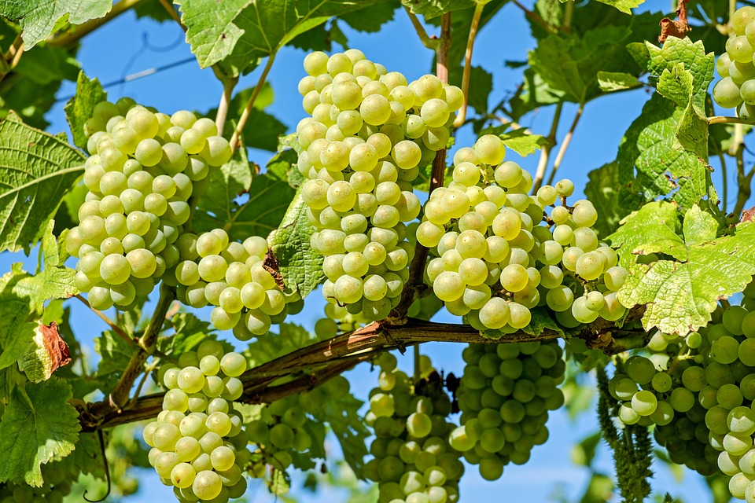En las cepas de vino blanco, con seguridad el Chardonnay es un varietal que encabeza la lista de los más utilizados en todo el mundo en la crianza de vinos blancos. Esta uva tiene una particular acidez natural, por lo que la crianza de sus vinos requiere de ajustes en su fermentación para suavizar y obtener notas más sedosas.
Debido a su proceso de fermentación se le añade un regusto cremoso y ligero, que incluso se ha asociado con el caramelo y la mantequilla. Entre los tipos de vino blanco, el Chardonnay sobresale por sus sabores frutales de manzana verde, piña, limón y apio, redondeados con un acabado dulce con notas de coco o caramelo. Además, se puede encontrar entre el lado dulce y seco.
Los vinos elaborados a partir de uvas riesling tienen un perfil afilado, son frescos y de acidez alta, sin importar si son dulces o secos. En él podrás percibir notas de miel, lima, manzanas verdes, albaricoque y minerales terrosos.
Por otro lado, tienden a ser más secos y profundos mientras envejecen en botella, ya que la uva riesling madura rápidamente sin desarrollar sabores muy complejos.
Después del Chardonnay esta es la variedad más fina entre las cepas blancas de origen francés. El vino Sauvignon Blanc se caracteriza por tener unos de los niveles de acidez más elevados y de sabores frutales y vegetales más definidos, incluyendo el pomelo, flores de saúco, esquejes de hierba fresca, pimiento verde, mejorana y tomatillo, con una terminación seca.
Hay que tener en cuenta que mientras más joven es el vino, más pesadas serán las notas verdes y herbáceas con independencia de la región de crianza. Además, se puede decir que los mejores vinos Sauvignon Blanc son aquellos que equilibran sus atributos herbales con sus sabores frutales agrios, sedosos e intensos, con acabado rápido.
La pinot gris o grauburgunder es una uva de color azul grisáceo utilizada para hacer un excelente vino blanco, especialmente en Alsacia, Alemania, Italia (donde su clon es llamado pinot grigio) y Estados Unidos.
Presentan notables variaciones, dependiendo de la región y del proceso de vinificación.
Los alsacianos son de cuerpo entre intermedio y completo, con un delicioso aroma floral. Aunque los vinos pinot gris están hechos para beberse jóvenes, los de Alsacia envejecen bien en botella.
Es una uva que tiene la virtud de pudrirse noblemente, pues al estar en contacto con el hongo Botrytis cinérea bajo ciertas condiciones de temperatura y humedad, el patógeno vegetal suaviza la piel del fruto, lo permite que la uva se deshidrate adoptando la apariencia de una pasa y concentrando sus azúcares y acidez, aptos para hacer vinos dulces y cremosos.
Los vinos semillón ofrecen prominentes notas herbáceas como el sauvignon blanc, a la vez que mantienen una acidez y un cuerpo cercanos al chardonnay.
Los sabores tienden a permanecer más tiempo en la boca, dejando gustos más matizados que los experimentados al primer sorbo.
La textura de estos vinos ha sido descrita como cerosa o aceitosa, a la vez que sus sabores son fuertes y brillantes. Esta es una impresionante división difícil de encontrar en otros caldos blancos.
Tienden a tener un perfil de sabores más picante y pesado, que el de otros tipos de vinos blancos.
Los producidos en climas cálidos como Sudáfrica presentan notas de papaya, mango y pimienta blanca. Los criados en climas fríos conservan mayores niveles de acidez, con sabores a limas, higos y jengibre.
El viognier es uno de los tipos de vinos blancos más difíciles de criar por la propensión de la vid al oídio (enfermedad vegetal) y por los problemas que plantea la cosecha, que debe hacerse en su justo momento.
Las uvas cosechadas muy pronto presentan deficiencias de aromas y sabores, mientras que las que se pasan de madurez dan un vino aceitoso y con poco buqué, contratiempos llevaron a que el varietal prácticamente llegara a la extinción en los años 1960.
Una copa de viognier es un paraíso para los bebedores atraídos por las características naturalmente exuberantes, florales y ácidas de los vinos blancos.
El vino ataca la nariz con perfumados aromas florales, aireados e hinchables. Estas notas se ven reforzadas por los sabores frutales y de cuerpo completo que golpean el paladar y se mantienen hasta el siguiente sorbo.
Es un vino suave y afrutado con menos peso en la lengua que otros blancos, pero repleto de jugosos sabores de peras, violetas, mangos, mandarina y madreselva.
Los vinos viognier sin barrica mantienen su acabado ligero de duraznos y albaricoques, mientras que los envejecidos moderan su acidez afrutada, produciendo un acabado semiseco especiado y de vainilla.
Es otro tipo de vino blanco que recibe menos elogios de los que merece, quizás debido a su producción prácticamente limitada a Italia, con pocos viñedos que deben soportar la naturaleza temperamental de la uva cortese.
Si bien esta uva da un rendimiento entre los mayores que existen cuando se logra bien, requiere de una atmósfera particularmente cálida para que el fruto se desarrolle lentamente, lo que permite que sus azúcares maduren produciendo sabores complejos sin prestar solo golpes de acidez.
Si el calor es algo excesivo las uvas maduran sin el azúcar necesario, proporcionando notas más agrias que luego hay que moderar mediante fermentación maloláctica.
El vino cortese es fresco, agrio, estructurado y sabroso, golpeando por igual con notas redondas de hierbas, frutas y almizcle. Es de un notable tono verde o pajizo y se vierte suave y transparente sin mucha espuma ni burbujas.
Entre los tipos de vinos blancos, los pinot blanc se encuentran entre los más secos y de cuerpo más redondo en la gran familia.
Aunque siguen siendo increíblemente ligeros, los pinot blanc presentan un notable almizcle tanto en nariz como en boca y los mejores añaden notas de frutos secos. Sin embargo, su cuerpo mediano no se ve abrumado por su mezcla única de sabores ligeros e intensos.
Encontrarás en tu copa de pinot blanc notas de pera, manzana amarilla y limón, mezcladas con nueces, anís estrellado, mantillo y madera de manzano.
Estos vinos terminan con notas levemente agrias debido a sus estables niveles de acidez. Esto puede mitigarse con un envejecimiento en barrica como ocurre en Estados Unidos y Argentina, pero las versiones más ligeras buscan enfatizar sus notas frutales y agrias evitando el roble.
La gewürztraminer, de color entre rosado y rojizo, está clasificada como una uva para vino blanco que produce uno muy ligero, refrescante y agradablemente condimentado, ideal para las cálidas tardes de verano.
Pocos vinos son tan florales y picantes como los gewürztraminer e incluso, los más reconocidos por su dulzura natural no se le comparan en jugosidad y sabores de huerto y jardín.
Estos vinos poseen un distintivo perfil aromático que empieza a atraer tan pronto comienza a caer en la copa.
Las uvas gewürztraminer son inherentemente olorosas y capaces de engañar a los sentidos, haciéndoles creer que presentan más dulzor y menos acidez de las que realmente tienen.
Numerosa familia de uvas que incluye unas 200 variedades, que muchos especialistas consideran la más antigua, por lo que moscatel sería la madre de todos los vinos.
Los moscatel son favoritos de los bebedores de vinos blancos con paladar dulce. Otro de sus atributos es su bajo contenido de alcohol, que puede ser de 5 %.
Las uvas moscatel se dan mejor en climas cálidos, por lo que su principal zona de producción en Europa es la mediterránea, incluyendo España, Francia e Italia. Portugal es también un importante productor.
Los moscatos tienen un perfil dulce sin mucha acidez o sabor residual, con notas de azahares, pera japonesa, cerezas blancas y lilas.
La variedad moscatel incluye versiones espumosas con burbujas que añaden un elemento de textura. Estos vinos son capaces de realzar ciertos platos principales y aperitivos.

 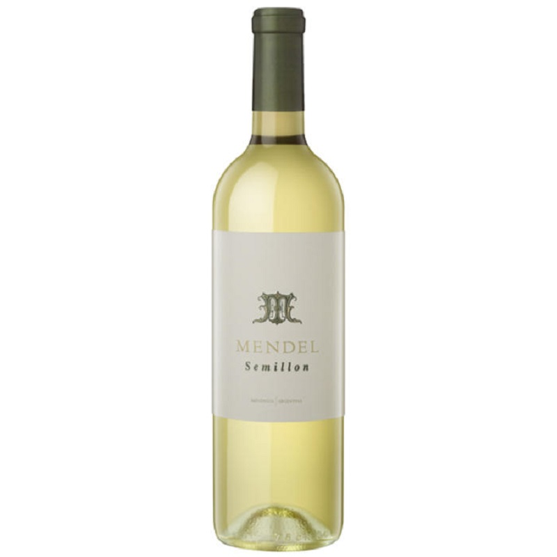
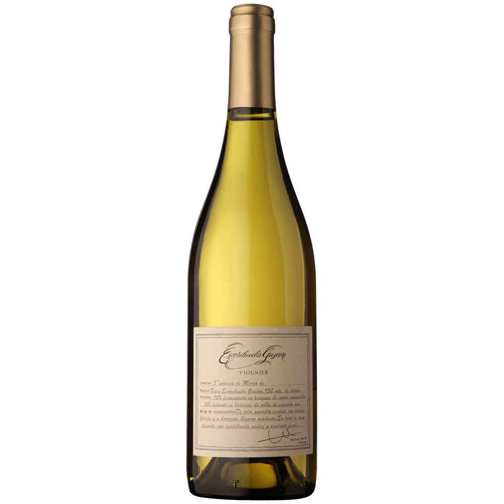
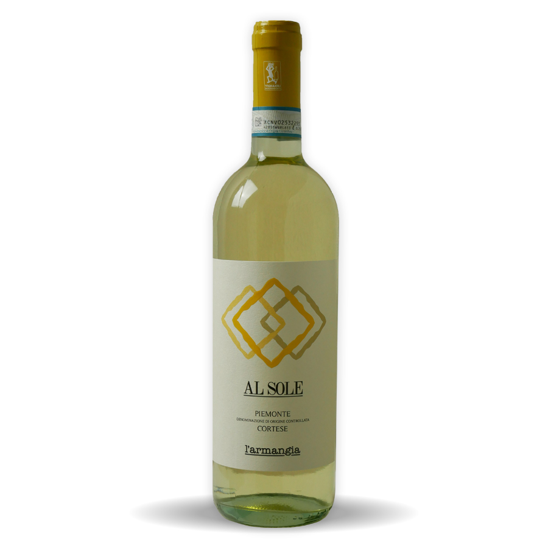
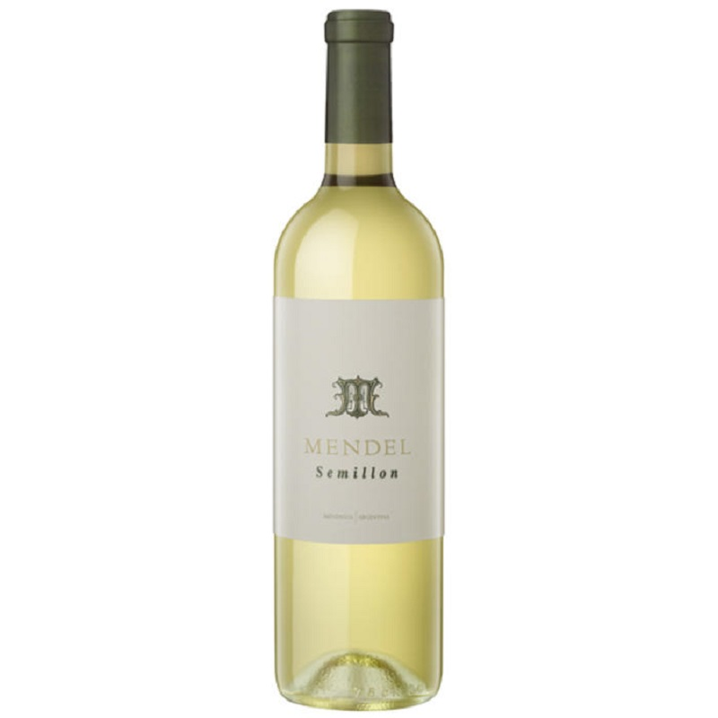
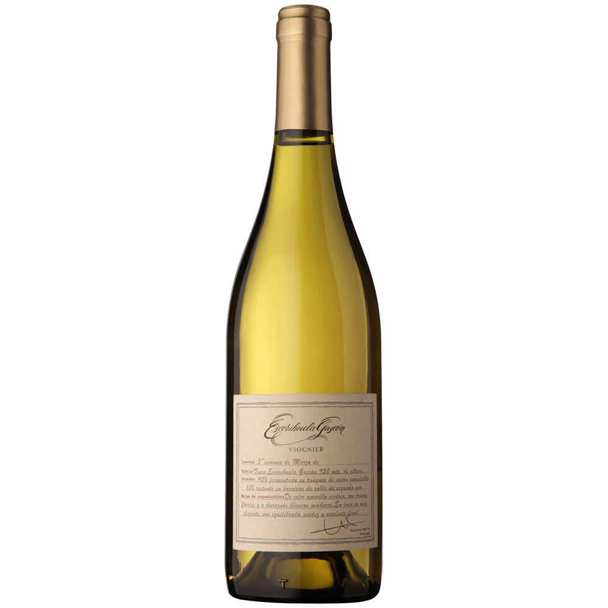
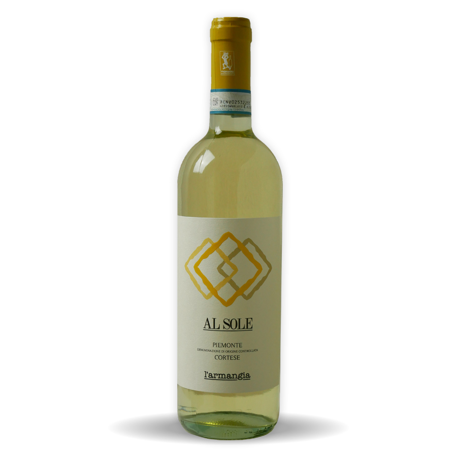
 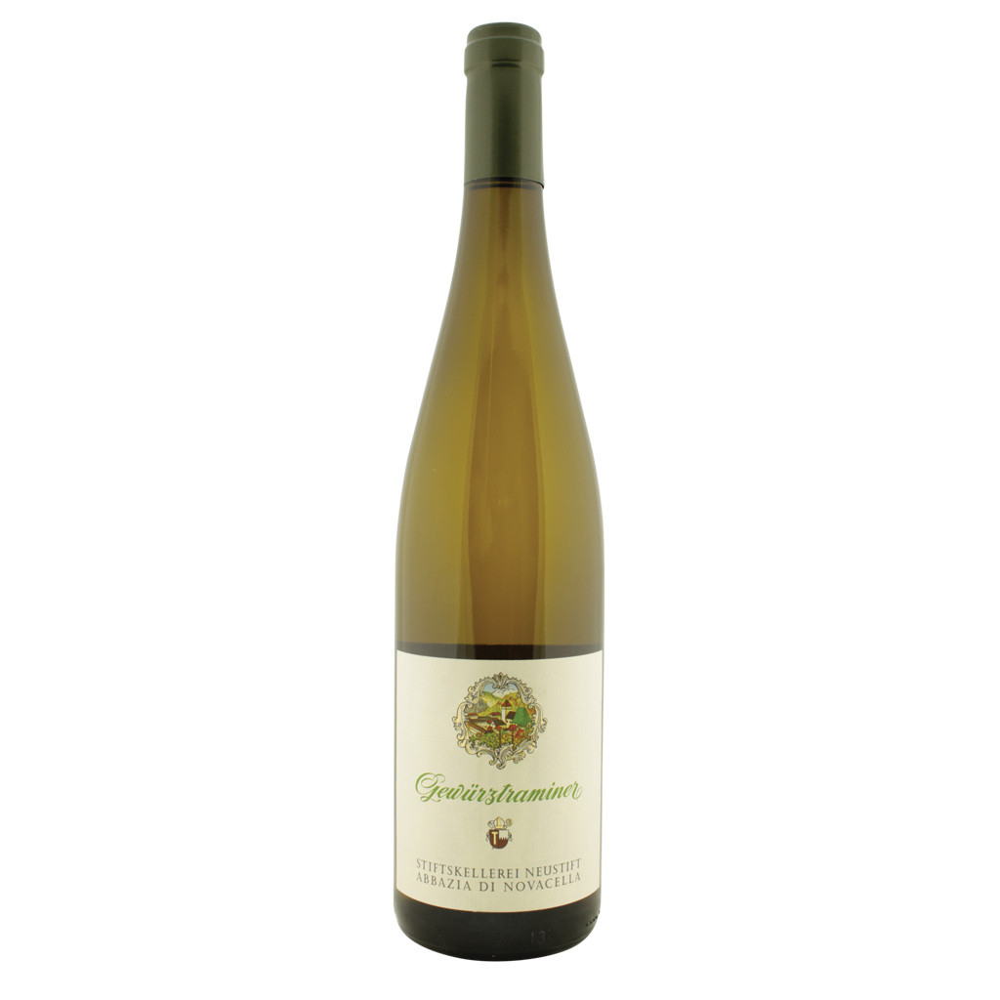
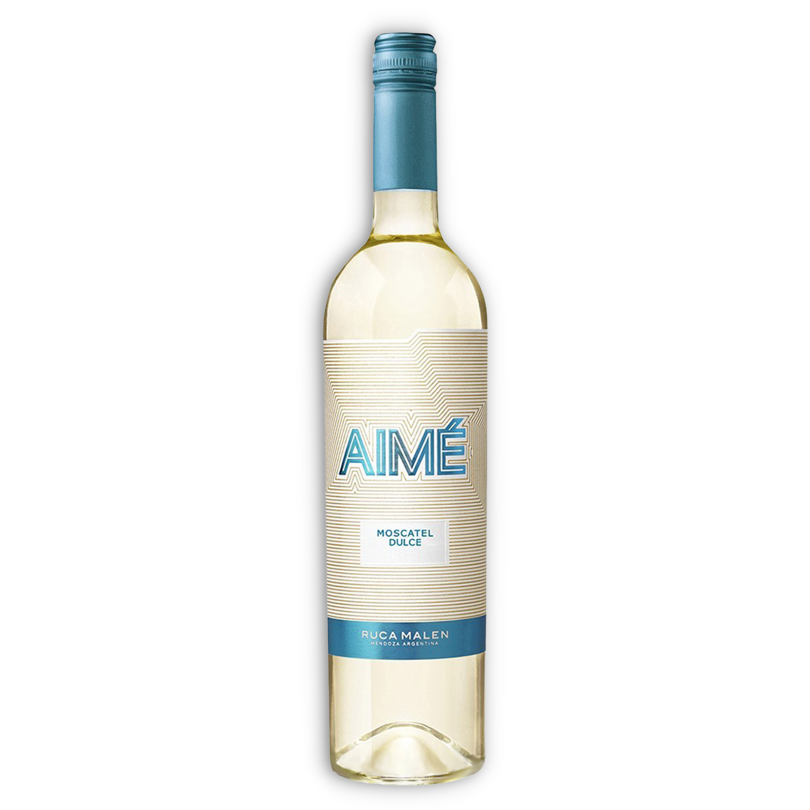
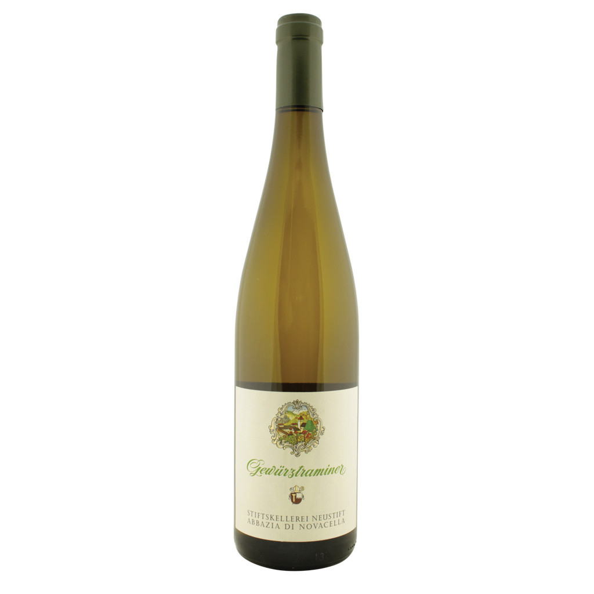
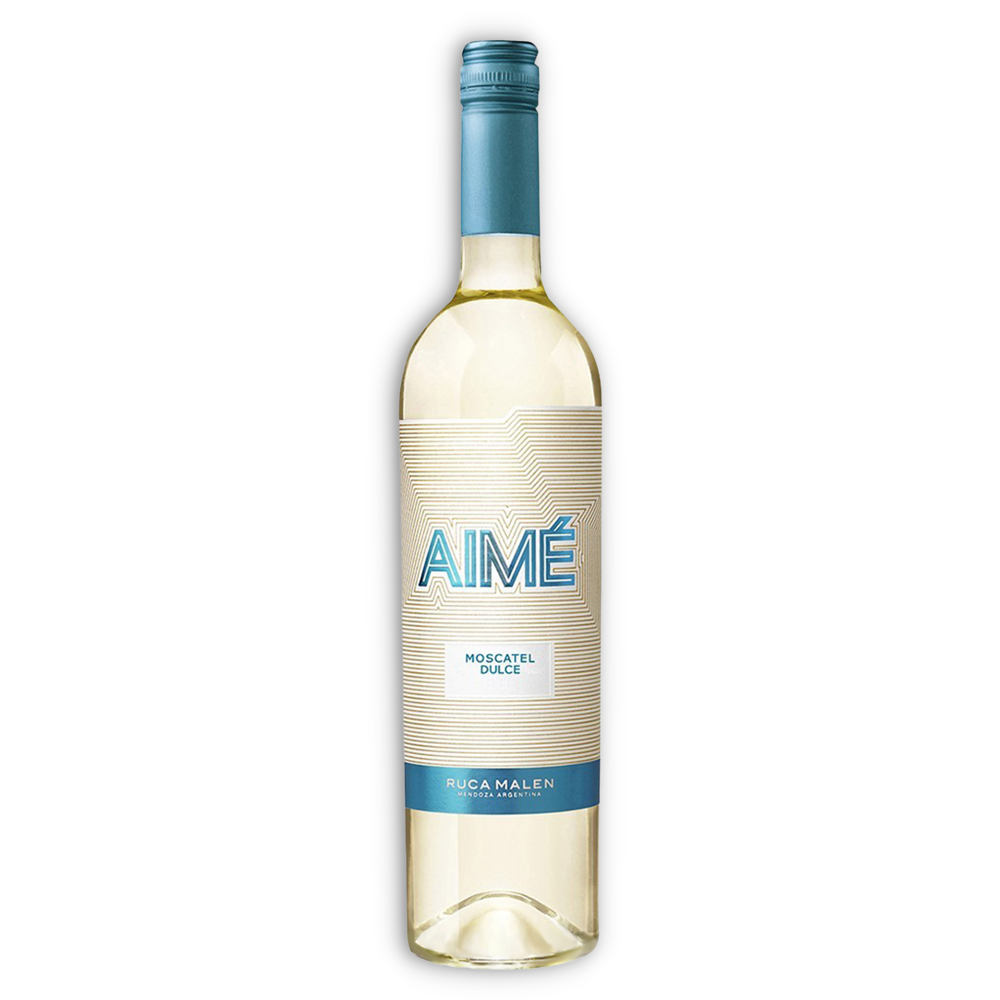